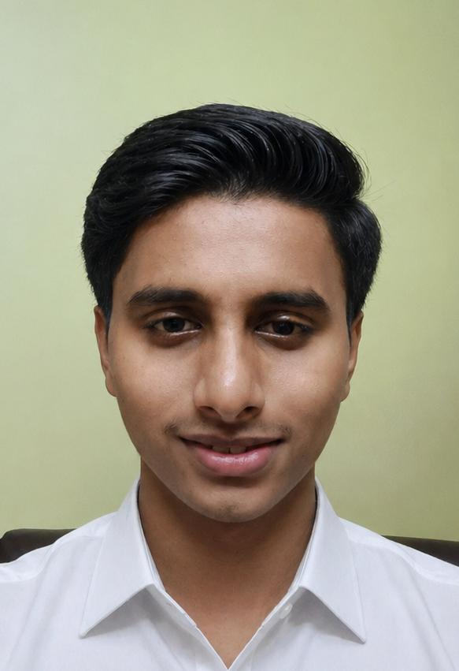

BTech ECS Student | Passionate about Design & Creativity | Gym Freak

Blending design skills with a disciplined, fitness-driven lifestyle.
I am pursuing BTech in Electronics and Computer Science from Fr. Conceicao Rodrigues College of Engineering, Bandra. I am passionate about design, fitness, and continuous self-improvement. Currently, I am focusing on academics and strengthening my web development and UI/UX skills. I believe consistency and discipline are the key factors behind both personal and professional growth.
A community-based platform concept focused on improving local interaction and user experience.
A system designed to manage and visualize canteen queues efficiently using simple UI logic.
I maintain a disciplined lifestyle through regular gym training and running. Fitness has helped me build consistency, focus, and a strong mindset, which reflects in both my personal and academic growth.
Email: samathshivare28@gmail.com
Phone: +91 7021114867
GitHub: github.com/samathshivare28-hash
Instagram: @samarth__05